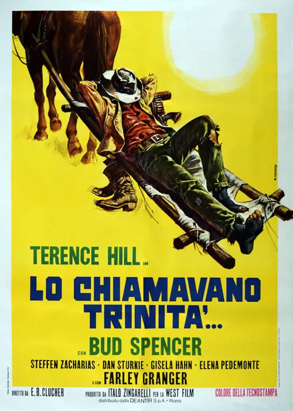

1970 · 25 tracce
Musiche di Franco Micalizzi.
25 tracce della selezione classica ampliata (CD 2 dell’edizione Beat 2021). Il CD 1 propone un diverso ordine ed editing: non è duplicato qui. Sono comprese le varianti pubblicate della selezione.
Gli elenchi documentano le edizioni pubblicate; la presenza di ciascuna traccia nel montaggio del film non è certificata.
Brani e ascolti
- 01
Trinity: Titoli
3:07 - 02
Un cowboy e due ragazze
2:23 - 03
Di fronte ai killers
2:03 - 04
Trinity: Con la stella di vicesceriffo
2:01 - 05
In due contro tutti
1:32 - 06
C'è un tempo per vivere
1:56 - 07
Mescal, ladrone messicano
1:27 - 08
Trinity: A cavallo lungo il fiume
2:06 - 09
Lazy cowboy
1:08 - 10
C'è un tempo per vincere: I mormoni alla riscossa
2:36Carosello Records
- 11
Trinity: Sempre in guardia
1:09 - 12
Trinity: A mollo nella tinozza
1:24 - 13
Trinity: Sequenza finale
3:25 - 14
Trinity: Titoli (#2)
3:21Video non identificato · collegamento a una ricerca
- 15
Trinity: Sempre in guardia (#2)
2:16Carosello Records · Stesso tema · variante non confermata
- 16
Trinity: A cavallo lungo il fiume (#2)
1:03Carosello Records · Stesso tema · variante non confermata
- 17
Mescal, ladrone messicano (#2)
1:01Carosello Records · Stesso tema · variante non confermata
- 18
Trinity: Con la stella di vicesceriffo (#2)
1:16Carosello Records · Stesso tema · variante non confermata
- 19
In due contro tutti (#2)
0:47Orchestra Franco Micalizzi - Topic · Stesso tema · variante non confermata
- 20
Trinity: A cavallo lungo il fiume (#3)
1:14Carosello Records · Stesso tema · variante non confermata
- 21
In due contro tutti (#3)
1:28Orchestra Franco Micalizzi - Topic · Stesso tema · variante non confermata
- 22
C'è un tempo per vincere: I mormoni alla riscossa (#2)
5:53Carosello Records · Stesso tema · variante non confermata
- 23
Trinity's valley
2:17Ursprungsbo · Stesso tema · variante non confermata
- 24
Trinity's valley (#2)
3:19Video non identificato · collegamento a una ricerca
- 25
Trinity's valley (#3)
1:18Ursprungsbo
Fonti e riferimenti
- Scheda del film e creditiConsultata il 3 ottobre 2026.
- Edizione e lista delle tracceConsultata il 3 ottobre 2026.
- Locandina — Lo chiamavano Trinità...Consultata il 3 ottobre 2026.